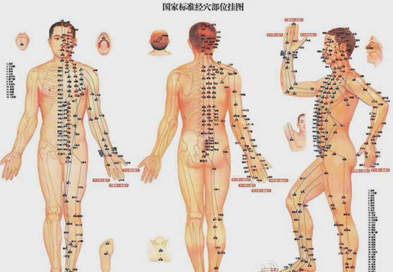

媒体报道
DFMZ308-中医生物活化疗法therapy bioactivation
-
特配独家中药药浴
Medicated bath -
中药药离子熏蒸
fumigation -
308准分子激光
308 excimer laser -
311窄谱UVB治疗仪
UVB treatment instrument -
蓝氧自体净血回输
Net of autologous blood doping -
穴位埋线抗体疗法
Antibody therapy -
抗感染疗法
Anti-infection therapy
-

-

药离子通过皮肤的渗透、转运、吸收，直
达病灶对脾胃的毒副作用小、中药熏蒸绿色纯天然。功效：热是治病因子"风、寒、湿"的克星，熏蒸有效排除体内的"风、寒、湿"邪，对因"风、寒、湿"邪引起的疾病，热疗能起到非常明显的效果。
点击咨询该疗法 -
银屑病的终结者
靶向针对患者病灶 临床康复率高达96.8%功效：靶向针对病灶，不损伤正常皮肤，消除传统调制窄脉产生的波形畸变、只能微处理器控制，高稳定性、高可靠性，可渗透16nm深层组织，修复受损细胞。
点击咨询该疗法 -

311-312nm最佳有效波长 无创、无痛、非介入治疗
功效：充分接受窄谱UVB发射的光线波长在311-312纳米范围内的光照，同时UVB治疗不需要服用其他辅助医物，避免了在传统PUVA方法中使用光敏医物所带来的副作用。
点击咨询该疗法 -

杀菌能力30000倍于抗生素 0毒副作用
功效：结合"治外必治内，治内必治根"施治理论，将蓝氧导入血液，增加血氧含量改善细胞代谢与活性，促进受损皮肤细胞修复；清除体内致病因子和毒素，激活免疫系统预防反复。
点击咨询该疗法 - 
-
提升抵御外界细菌的能力，提升抵抗力低下，及时控制感染。
功效：抗感染治疗包括抗细菌、抗病毒、抗表浅真菌及抗寄生虫等，快速控制病灶部位感染，提升自体皮肤免疫功能，促进新陈代谢达到治疗的目的。
点击咨询该疗法